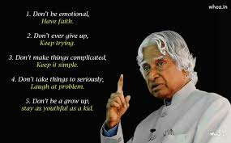

APJ Abdul Kalam
1931-2015

Early life and background
Avul Pakir Jainulabdeen Abdul Kalam was born on 15 October 1931, to a Sunni Tamil Muslim family in the pilgrimage centre of Rameswaram on Pamban Island, then in the Madras Presidency and now in the State of Tamil Nadu. His father Jainulabdeen Marakayar was a boat owner and imam of a local mosque; his mother Ashiamma was a housewife.His father owned a ferry that took Hindu pilgrims back and forth between Rameswaram and the now uninhabited Dhanushkodi. Kalam was the youngest of four brothers and one sister in his family.His ancestors had been wealthy Marakayar traders and landowners, with numerous properties and large tracts of land. Marakayar are a Muslim ethnic group found in coastal Tamil Nadu and Sri Lanka who claim descent from Arab traders and local women. The family business had involved trading groceries between the mainland and the island and to and from Sri Lanka, as well as ferrying pilgrims between the mainland and Pamban. With the opening of the Pamban Bridge to the mainland in 1914, however, the businesses failed and the family fortune and properties were lost by the 1920s, apart from the ancestral home. The family was poverty-stricken by the time Kalam was born. As a young boy he had to sell newspapers to add to the family's meager income. In his school years, Kalam had average grades but was described as a bright and hardworking student who had a strong desire to learn. He spent hours on his studies, especially mathematics. After completing his education at the Schwartz Higher Secondary School, Ramanathapuram, Kalam went on to attend Saint Joseph's College, Tiruchirappalli, then affiliated with the University of Madras, from where he graduated in physics in 1954.He moved to Madras in 1955 to study aerospace engineering in Madras Institute of Technology.
Career as a Scientist
After graduating from the Madras Institute of Technology in 1960, Kalam joined the Aeronautical Development Establishment of the Defence Research and Development Organisation (by Press Information Bureau, Government of India) as a scientist after becoming a member of the Defence Research & Development Service (DRDS). He started his career by designing a small hovercraft, but remained unconvinced by his choice of a job at DRDO. Kalam joined the INCOSPAR, working under Vikram Sarabhai, the renowned space scientist. He was interviewed and recruited into ISRO by H. G. S. Murthy, the first Director of Thumba Equatorial Rocket Launching Station (TERLS). In 1969, Kalam was transferred to the Indian Space Research Organisation (ISRO) where he was the project director of India's first Satellite Launch Vehicle (SLV-III) which successfully deployed the Rohini satellite in near-earth orbit in July 1980; Kalam had first started work on an expandable rocket project independently at DRDO in 1965. In 1969, Kalam received the government's approval and expanded the programme to include more engineers. Kalam addresses engineering students at IIT Guwahati In 1963 to 1964, he visited NASA's Langley Research Center in Hampton, Virginia; Goddard Space Flight Center in Greenbelt, Maryland; and Wallops Flight Facility. Between the 1970s and 1990s, Kalam made an effort to develop the Polar Satellite Launch Vehicle (PSLV) and SLV-III projects, both of which proved to be successful. Kalam was invited by Raja Ramanna to witness the country's first nuclear test Smiling Buddha as the representative of TBRL, even though he had not participated in its development. In the 1970s, Kalam also directed two projects, Project Devil and Project Valiant, which sought to develop ballistic missiles from the technology of the successful SLV programme. Despite the disapproval of the Union Cabinet, Prime Minister Indira Gandhi allotted secret funds for these aerospace projects through her discretionary powers under Kalam's directorship. Kalam played an integral role convincing the Union Cabinet to conceal the true nature of these classified aerospace projects. His research and educational leadership brought him great laurels and prestige in the 1980s, which prompted the government to initiate an advanced missile programme under his directorship.